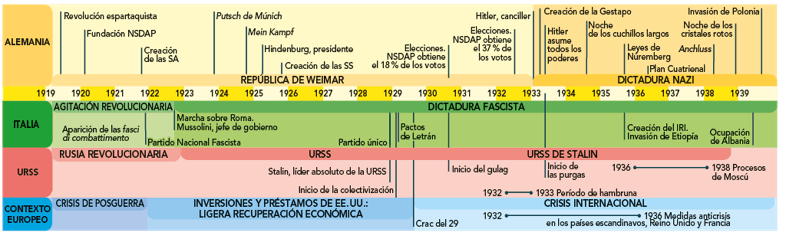

Introducción
Los años que transcurrieron entre 1918 y 1939 se vieron sacudidos por las consecuencias de tres grandes impactos:
•La Primera Guerra Mundial
•La Revolución rusa
•La crisis de 1929
El periodo de entreguerras es fundamental para comprender los acontecimientos posteriores que marcaron el siglo XX. En un contexto de inestabilidad política y económica, numerosos países asistieron al retroceso de la democracia y el avance de del autoritarismo, y en el caso de Italia, la URSS y Alemania surgieron regímenes totalitarios en los que el Estado controlaba todos los aspectos de la vida pública y privada de la población, a través de la violencia y la propaganda.
A finales de 2018, el secretario general de la ONU alertaba del auge de los movimientos neonazis y de su creciente influencia en los partidos políticos tradicionales. Estos movimientos, presentes en numerosos países, se caracterizan por el uso de la violencia, así como por una ideología ultranacionalista y xenófoba, y el odio a la democracia y a las minorías étnicas, religiosas…
